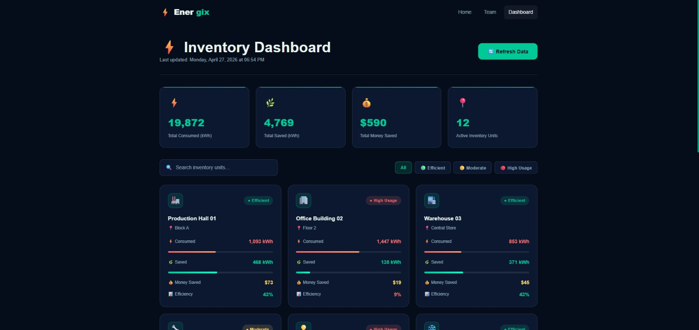

⚡ CAPSTONE 2026 | SMART WAREHOUSE IoT
Energix — Smart Energy Platform
نظام ذكي متكامل لترشيد طاقة المخازن بالـ IoT ومدعوم بمساعد الذكاء الاصطناعي Grok (xAI)
65% - 70%
الوفر الإجمالي في الكهرباء
وفر موثق أسبوعياً في فواتير الإضاءة بممرات المخازن الكبرى.
20% Standby
وضع الاستعداد الآمن
حماية لمبات الـ LED من التلف وتأمين رؤية واضحة لحركة الرافعات الشوكية.
Grok (xAI)
المساعد الذكي Co-Pilot
تحكم صوتي ونصي بالهاردوير وكشف استباقي للأعطال ومناطق الهدر.
🛑 THE PROBLEM
التحديات التشغيلية والمالية لإضاءة المخازن التقليدية
لماذا تفشل أساليب الإضاءة الحالية في المستودعات وسلاسل التوريد الكبرى؟
⚡ إهدار مالي حاد (24/7 Waste)
- صفوف الإضاءة (High Bay) تظل تعمل بكامل طاقتها 100% طوال 24 ساعة دون انقطاع.
- ممرات كاملة تبقى فارغة لساعات مع استمرار استهلاك الكهرباء دون أي عائد.
- تمثل الإضاءة ما يصل إلى 40% من إجمالي فاتورة كهرباء المنشأة اللوجستية.
💥 تلف المصابيح السريع (Burnout)
- التشغيل المستمر يرفع الحمل الحراري ويدمر درايفرات ومحولات الـ LED سريعاً.
- حساسات الحركة العادية التي تطفئ النور كلياً (0%) تسبب صدمات كهربائية وحرارية للمبات.
- تكاليف باهظة لاستبدال وصيانة الإضاءة المعلقة في الأسقف العالية (12 متراً).
📊 انعدام الرؤية البيانية (No Data)
- افتقار مديري المخازن لتقارير أسبوعية تفصل حجم الهدر في كل ممر ومنشأة.
- عدم وجود نظام تنبؤ بالأعطال: لا يُكتشف الحساس المعطل إلا بعد توقفه تماماً.
- صعوبة اتخاذ قرارات مدروسة لتحسين استهلاك الطاقة وإدارة مساحات التخزين.
🛡️ THE SOLUTION
الحل المعتمد: نظام Energix التكيفي الذكي
المعادلة الهندسية التي تجمع بين التوفير الأقصى وأمان العمال وحماية الأصول
🛡️ سر وضع الـ 20% Standby
- الأمان أولاً: يوفر رؤية واضحة ومستمرة لسائقي الرافعات الشوكية لمنع حوادث الاصطدام.
- حماية المصابيح: يمنع الصدمات الحرارية الكهربائية الناتجة عن الإطفاء الكلي 0%.
- وفر هائل: خفض الإضاءة إلى 20% يوفر 80% من الطاقة في أوقات السكون.
👁️ استشعار مزدوج للحركة والحرارة
- دمج حساسات الحركة (PIR) مع حساسات الحرارة والتواجد البشري (DHT).
- حل مشكلة العامل الثابت: لو وقف العامل يفحص بضاعة لن ينطفئ النور في وجهه.
- سرعة استجابة ورفع النور لـ 100% خلال 2 إلى 3 ثوانٍ فقط فور الدخول.
⚙️ أتمتة كاملة (Zero Friction)
- نظام ذاتي 100%: لا يتطلب أي تغيير في طريقة أو عادات عمل العمال اليومية.
- تعتيم انسيابي ناعم (Smooth PWM Fading) يمنع الوميض والرعشة المجهدة للعين.
- تصميم Modular مرن قابل للتطبيق في أي مخزن مهما اختلفت مساحته.
🧠 ALGORITHMIC LOGIC
القواعد البرمجية الخمس للتحكم الذكي
خوارزميات التحكم الأوتوماتيكي وحصاد ضوء النهار وتأمين الطوارئ القصوى
1. وضع الدخول والنشاط (Active 100%): رفع الإضاءة لكامل السطوع فور رصد حركة أو حرارة خلال 2 إلى 3 ثوانٍ.
استجابة فورية
2. وضع الاستعداد الذكي (Standby 20%): التلاشي التلقائي بنعومة إلى 20% عند انعدام الحركة لمهلة محددة دون إطفاء كامل.
وفر 80% في السكون
3. حصاد ضوء النهار (Daylight Harvesting): خفض الإضاءة الصناعية بنسبة 40% إلى 60% نهاراً عبر حساس LDR.
استغلال الشمس
4. تخصيص المناطق الديناميكي (Dynamic Zoning): إبقاء منطقة عمل العامل فقط عند 100% وتعتيم باقي طول الممر.
تركيز النور للعمل
5. أمان الطوارئ القصوى (Emergency Override): إضاءة المخزن كاملاً بنسبة 100% فورياً عند استشعار حريق لتسهيل الهروب.
أمان الأرواح 100%
🎛️ HARDWARE PROTOTYPE
النموذج الأولي الفيزيائي والمواصفات الهندسية
المكونات الإلكترونية وحلول التحديات الهندسية المبتكرة في النموذج المصغر
🎛️ المتحكم والدوائر (MCU)
- متحكم دقيق (Arduino Uno / Mega) لمعالجة إشارات الحساسات في حلقات سريعة.
- منافذ PWM للتحكم الدقيق في التعتيم التدريجي دون أي رعشة بصرية.
- شاشة LCD ميدانية تعرض الوضع الحالي (Active/Eco) والواط الموفر لحظياً.
📡 حزمة المستشعرات الذكية
- مستشعرات حركة PIR مجهزة بأسطوانات عزل وتوجيه (Blinders) لمنع تداخل الممرات.
- مستشعر حرارة وتواجد DHT11 لتأكيد الوجود البشري في الممر.
- مقاومات ضوئية LDR لقياس شدة ضوء النهار وحصاد طاقة الشمس.
📐 معيار التطبيق الميداني
- مجسم ممر مخزن مطلي بأسود غير لامع لمحاكاة الخواص الضوئية للمخازن الحقيقية.
- معيار التوزيع الميداني: مستشعر واحد لكل 8 إلى 10 أمتار على طول الممر.
- ترميز لوني معتمد للأسلاك لمنع أي تداخلات أو تشويش في الإشارة.
💻 SOFTWARE PLATFORM
منصة الويب السحابية ولوحة تحكم المخازن
المراقبة الحية وتصنيف المنشآت واستخراج التقارير الأسبوعية التنفيذية (PDF)
⚡ مميزات لوحة التحكم السحابية
- مؤشرات حية (KPIs): تتبع إجمالي الكيلوواط المستهلك والموفر والمبالغ المالية الموفرة.
- تصنيف المخازن الذكي: تصنيف فوري للمنشآت (Efficient كفء، Moderate متوسط، High Usage هدر مرتفع).
- تقارير أسبوعية تفاعلية: استعراض تفاصيل الاستهلاك لكل يوم (من الإثنين للأحد) بضغطة زر.
- استخراج تقارير PDF رسمية: ملفات تنفيذية جاهزة للطباعة والمتابعة الإدارية.
- إنذارات الصيانة التنبؤية: كشف مبكر لاضطرابات الطاقة أو الحساسات المتعطلة.

🌟 NEW FEATURE (PLAN A)
المساعد الذكي للمخزن: Grok AI Co-Pilot (xAI)
تحويل نظام الإضاءة لمنظومة تفاعلية تتحدث وتتحكم وتكتشف الأعطال بالذكاء الاصطناعي التوليدي
🗣️ التخاطب باللغة الطبيعية
- المدير يتحدث مع المخزن صوتياً أو نصياً بالعربية أو الإنجليزية.
- سؤال تحليلي: "يا جروك وفرنا كام كهرباء الأسبوع ده؟".
- Grok يحلل البيانات ويجيب فوراً: "وفرتم 59 كيلوواط بنسبة تحسن 68%".
⚡ تحكم ميداني بالهاردوير (Tools)
- Grok يستدعي دوال التحكم في الأردوينو مباشرة (Function Calling).
- أمر فوري: "اطفي ممر 1 للصيانة حالاً".
- اللمبة تنطفئ في النموذج المصغر فورياً أمام لجنة التحكيم!
🧠 التشخيص الاستباقي للأعطال
- تحليل شذوذ الاستهلاك: "ليه ممر 2 استهلاكه عالي الأسبوع ده؟".
- Grok يكشف السبب: "حساس ممر 2 يسجل حركة مستمرة، ننصح بفحص مهلة السكون".
- تقديم حلول وإجراءات صيانة وقائية للمشرف.
📊 PROVEN RESULTS
نتائج الاختبارات والتحليل الرقمي (4 أسابيع)
أرقام قياسية موثقة تثبت جدوى النظام وسرعة استجابته الميدانية
65% - 70%
الوفر الإجمالي الأسبوعي
في فاتورة الكهرباء مقارنة بالنظام التقليدي.
80%
وفر ساعات السكون والليل
خلال العمل بوضع الاستعداد الآمن 20%.
40% - 60%
وفر إضافي بالنهار
بفضل استغلال ضوء الشمس الطبيعي عبر LDR.
2 - 3 ثوانٍ
سرعة استجابة الدخول
سرعة رفع الإضاءة لـ 100% فور دخول العامل.
96.4%
دقة استشعار الحركة
نسبة إنذار خاطئ أقل من 3% في بيئة العمل.
15 - 20 سنة
مضاعفة عمر المصابيح
بفضل التعتيم السلس وتجنب دورات الإطفاء الصفرية.
💼 BUSINESS MODEL
دراسة الجدوى ونموذج العمل التجاري (BMC)
تحويل الفكرة الهندسية إلى منتج صناعي وتجاري مستدام في السوق
💎 القيمة المضافة (Value Props)
- وفر 65-70% موثق في فاتورة الكهرباء.
- مساعد ذكي Grok AI للتحكم والتشخيص الفوري.
- صفر تغيير في روتين أو طريقة عمل العمال.
- مضاعفة العمر الافتراضي للمصابيح وخفض تكلفة الصيانة.
🎯 شرائح العملاء المستهدفة
- فئة (أ): المخازن ومراكز التوزيع اللوجستية الضخمة.
- فئة (ب): المصانع ومستودعات التخزين المتوسطة والصغيرة.
- مستودعات التبريد والتجميد (Cold Storage).
- سلاسل التجزئة ومخازن الهايبر ماركت الكبرى.
💰 مصادر الإيرادات (Revenues)
- رسوم توريد وتركيب أجهزة التحكم الأولية.
- اشتراكات سنوية في برمجيات المنصة السحابية (SaaS).
- عقود الصيانة والدعم الفني السنوية (SLA).
- نموذج المشاركة في الوفر المحقق (% من الوفر).
🌍 SDGS & ROADMAP
أهداف التنمية المستدامة وخريطة الطريق المستقبلية
التوسع الصناعي المستقبلي والالتزام بالمعايير العالمية للطاقة النظيفة
الأولوية لمستودعات التبريد (Cold Storage Priority): البدء بمخازن التبريد لأن حرارة المصابيح تزيد حمل أجهزة التبريد، مما يحقق وفراً مزدوجاً.
وفر مزدوج
التكامل مع أنظمة الـ WMS / ERP: ربط الحساسات بجداول وصول الشاحنات لإضاءة الممرات استباقياً قبل وصول عمال التفريغ.
تكامل لوجستي
خوارزميات التعلم الآلي لضبط المهلة (AI Tuning): تحليل كثافة الحركة لتعديل وقت السكون آلياً لكل ممر بناءً على نشاطه الفعلي.
AI Tuning
أهداف الأمم المتحدة للتنمية المستدامة (UN SDGs): تحقيق الأهداف 8 (العمل اللائق)، 9 (الصناعة والابتكار)، 12 (الاستهلاك المسؤول)، و17 (الشراكات).
SDGs 8, 9, 12, 17
🎬 LIVE DEMO
Energix: قيادة مستقبل كفاءة الطاقة في المخازن
نظام متكامل يجمع بين كفاءة الطاقة الموثقة، وأمان العاملين، وقوة الذكاء الاصطناعي التوليدي
🚀 استعراض العرض الحي المباشر (Interactive Live Demo)
- 1. النموذج الفيزيائي المصغر: اختبار رفع النور الفوري لـ 100%، التعتيم الانسيابي PWM، وتفعيل وضع الـ 20% Standby.
- 2. لوحة التحكم السحابية: استعراض تتبع الطاقة لايف، وتصنيف المنشآت الـ 12، وتوليد التقارير اللحظية.
- 3. التخاطب الحي مع Energix AI: توجيه سؤال تحليلي عن التوفير، وإصدار أمر تحكم بالممرات مباشرة عبر الهاتف!
📱 امسح بكاميرا الهاتف لتجربة التحكم:

🔒 نظام مؤمن — رمز المشغل (PIN): 2026